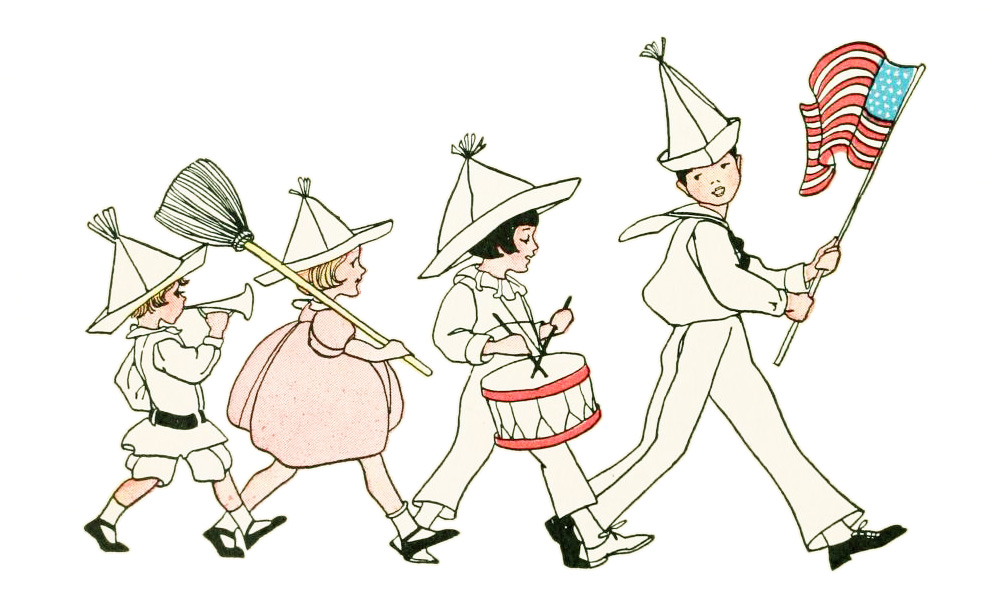

|
プロフィール

●名前：42uk1アズキ
「azuki」のLEET表記🫘 ⋆︎1997年生まれ ⋆︎地方在住の社会人6年目 ⋆︎仕事は事務系。4社目。 ⋆︎ 1st イエベ秋 / 2nd イエベ春 ⋆︎ 顔タイプエレガント ⋆︎骨格ストレート（自己診断） ⋆︎ENTJ-A ⋆︎ADHD傾向あり（未診断） 本当はキラキラバリバリOLで働きたかったけど、心がついていけなくなった経験があり、今は無理せず働くにシフト。 東京で就職すればよかったコンプレックスと、自分はそちらで暮らすのがいいのだろうなという気持ちがある。 一方で自分で切り拓いてきた今の生活を愛してもいる。 ⋆︎ロジカルに話したい/内省的・納得いくまで考えたい（面倒です） ⋆︎だいたい向上心しかありません（面倒です） ●エンタメ ⋆︎月：ニューヨークのニューラジオ、一人賛否、BSノブロック ⋆︎木：佐久間宣行のオールナイトニッポン0 ⋆︎土：霜降り明星のオールナイトニッポン ⋆︎Youtube：田辺さん、永野、さや香・新山、雷獣、たむらかえ、カップル杉下 ⋆︎その他：奇奇怪怪、視点倉庫、こんな本どうですか？、ポインティ トークが何よりも好き。 そして佐久間さん大好きです。アクスタ欲しい。 ●私の人格形成に関わっているもの ⋆︎課題と部活だけの修行僧な女子高3年間 ⋆︎ベンチャーみたいに働きまくったサークル（大4） ⋆︎AAA/Nissy ⋆︎宇宙兄弟/ハイキュー!!/BANANA FISH 詳しくはこちら → ★ noteへ飛びます ← トップに戻る |